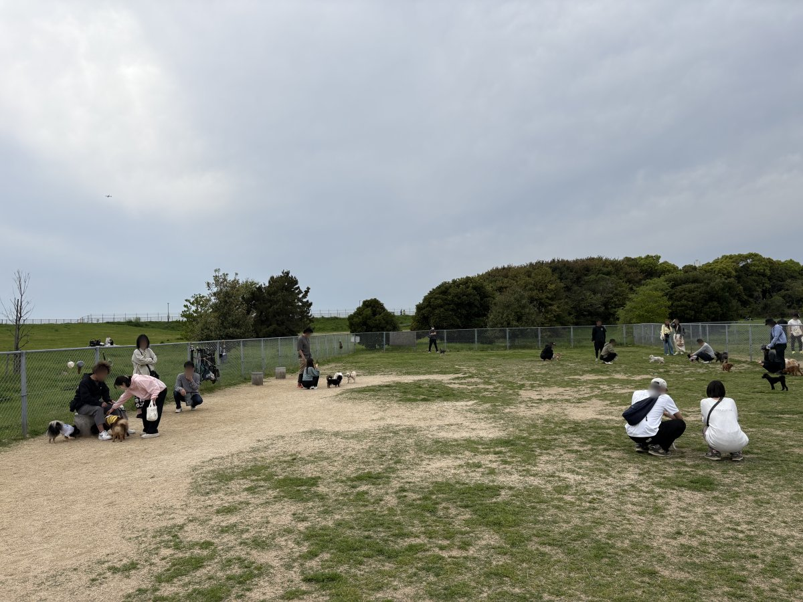

海とのふれあい広場
大阪府堺市堺区匠町6-1
駐車場
あり（無料）
トイレ
あり（洋式）
ドッグラン
あり（無料） / 小型犬エリア・中大型犬エリア
入場料
無料
備考・犬連れでのポイント
入場・駐車場・ドッグラン全て無料の三拍子。通称うみふれ。約27.9haの広大な敷地で大阪湾に面しており、晴れた日は明石海峡大橋も見える。
ドッグランは小型犬エリアと中大型犬エリアの2区画、天然芝。9:00〜17:00（夏季：7月海の日含む三連休〜8月末の土日祝は7:00〜19:00）。
接種証明書の提示不要。BBQ広場や海釣りテラスもあり。